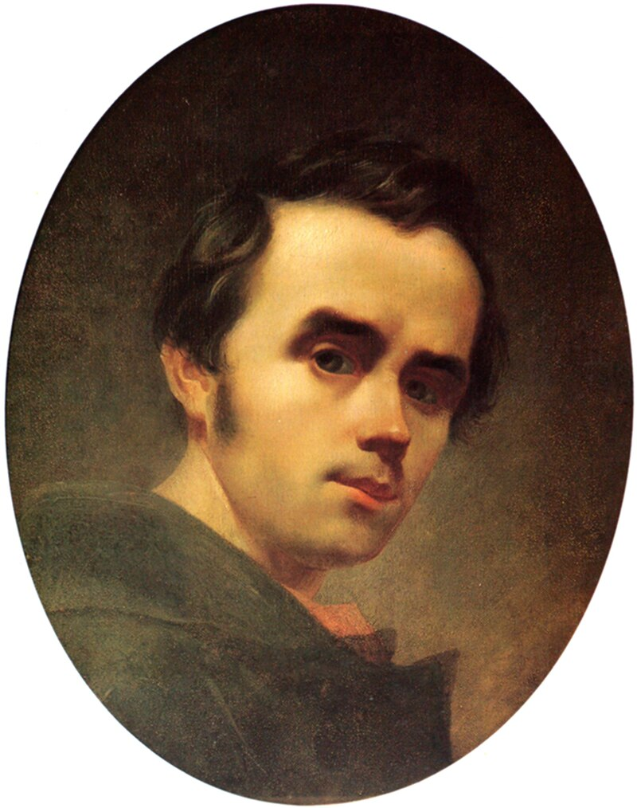

Київський національний університет імені Тараса Шевченка — державний заклад вищої освіти України, розташований у місті Києві. За рейтингами ВНЗ, на 2020 2023 рік посідав 1 місце і є найбільшим університетом за кількістю студентів і спеціальностей. З 2009 до 2014 року мав статус автономного дослідницького університету.
З 30 квітня 2021 року посаду ректора університету обіймає Володимир Бугров.
Думи... Думи мої, думи,
Лихо мені з вами!..
Чом вас вітер не розвіяв?..
Думи... Думи мої, думи,
Лихо мені з вами!..
Тарас Шевченко
Що купити на п'ятницю
Чай
Вкусняшку
Молоко
М'ясо
Плани на четверг
Проснутись
Почистити зуби
Прибрати в кімнаті
Сходити в магазин по продукти
Топ імен для...
Собак
Котів
Шарік
Барсік
Бобик
Мурзик
Тузик
Васька
Рекс
Гарфілд
«Крик», або «Зойк»
Назва декількох експресіоністських полотен і відбитків норвезького художника Едварда Мунка, що зображують агонізуючу від жаху постать людини на тлі криваво-червоного неба.
Тлом для твору є пейзаж фіорду Осло, що відкривається з пагорбу Екеберг (Ekeberg) в Кристіанії, Норвегія.
Едвард Мунк створив декілька версій «Крику» у різних техніках.
Літературні твори Тараса Шевченка
Думка. Тяжко-важко в світі жити
«Думка. Тяжко-важко в світі жити…» — вірш Тараса Шевченка, написаний 2 листопада 1838 року в Гатчині.
Катери́на
Поема Тараса Шевченка, написана в Петербурзі наприкінці 1838
— на початку 1839 років, присвячена Василю Жуковському у пам'ять 22 квітня 1838 року, дня викупу поета з кріпацтва.
Тарасова ніч
Історична поема Тараса Шевченка, перший з творів, у якому він звернувся до поетичного осмислення історичного минулого України. У поемі з великою силою висловлене
народне розуміння минулого як героїчної доби козацької вольниці, що сприймалась як протиставлення кріпосницькому гнітові сучасної поетові України.

Тара́с Григо́рович Шевче́нко
Селектори нащадків
Дозволяють застосовувати стилі до елементів, що містяться в середині
інших елементів. Наприклад, наступний опис дозволяє вивести весь текст
всередині тегу <b> червоним кольором, але лише тих тегів <b>, що містяться
всередині тегу <p>, як у випадку <p> Hello <b> world! </b> </p>
Селектори дочірніх елементів
Цей селектор схожий на селектор нащадків, але він ще більше
конкретизує область застосування стилю, вибираючи лише ті елементи, що є
безпосередніми дочірніми елементами іншого елемента.
 GitHub(Bohdaniy)
GitHub(Bohdaniy)